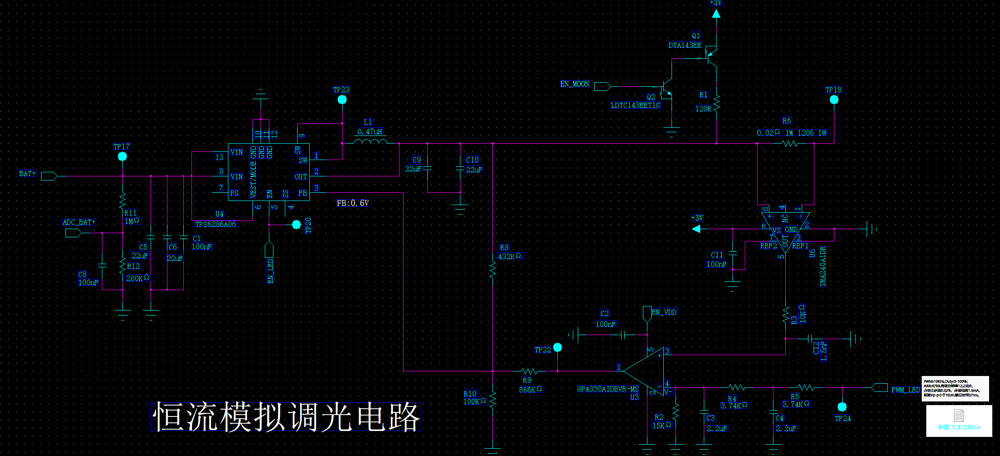

一页结论
这块板的核心是一条链路：PWM 占空比 → 滤波后的直流电压 → LED 电流。三个指标（建立时间、纹波、每步电流）全部由同一条链路决定，改一个电容就会同时动到另外两个。先把结论摆出来：
| 指标 | 算式 | 按本图参数 |
|---|---|---|
| 电流设定跨阻 | K = 1 / (G · R6) | 1 / (20 × 0.030 Ω) = 1.667 A/V |
| 满量程电流 | IFS = K · VPWM | 1.667 × 3.0 V = 5.00 A |
| 调光分辨率 | N = fCLK / fPWM，bit = log2N | 48 MHz / 10 kHz = 4800 步 = 12.23 bit |
| 每步电流 | ΔI = IFS / N | 5.00 A / 4800 = 1.04 mA |
| 滤波时间常数 | τ = R · C | 3.74 kΩ × 2.2 µF = 8.23 ms |
| 建立时间（1%） | t1% = 6.64 τ（两级同参数 RC） | 54.6 ms，实测 57 ms |
| 调光纹波 | Vpp = (4VPWM/π) · A² · 1.23 | 17.6 µVpp（RMS 约 5.6 µV） |
最容易错的一步：拿单级指数 5τ 去估两级 RC 的建立时间。单级 5τ 是 41 ms，两级要到 1% 需要 6.64τ，差 33%。同样，纹波也不能只算一级衰减——两级是平方关系，差一个数量级。
下面按「电路怎么接 → 环路怎么闭合 → 建立时间怎么算 → 纹波怎么算 → 频率步进怎么换算成电流」的顺序展开。所有公式都能用页面末尾的在线计算器复算。
第 1 章 电路拆解
先把原理图按功能切成五块，后面所有计算都建立在这个切分上。

| 环节 | 器件 | 作用 | 决定什么指标 |
|---|---|---|---|
| ① 功率级 | U4 TPS6286A06、L1 0.47 µH、C9/C10 22 µF×2 | 把 BAT+ 降压到 LED 串所需电压，2.4 MHz 同步整流 | 开关纹波、效率 |
| ② 电流采样 | R6 0.030 Ω 1% 2512、U6 INA240A1 | 把 LED 电流转成电压，增益 20 V/V | 跨阻 1.667 A/V、增益误差 |
| ③ 采样滤波 | R3 10 kΩ、C12 1.5 nF | 抑制 2.4 MHz 开关噪声进入运放 | 采样噪声、环路相位 |
| ④ 误差放大 | U3 OPA330（零漂移） | 比较设定电压与采样电压，输出误差量 | 直流精度、响应速度 |
| ⑤ 环路注入 | R9 866 kΩ、R8 432 kΩ、R10 100 kΩ | 把运放输出注入 FB 分压中点，改变 VOUT | 调节范围、环路增益 |
| ⑥ 调光滤波 | R5/R4 3.74 kΩ、C4/C3 2.2 µF | 把 10 kHz PWM 滤成直流设定电压 | 建立时间、设定纹波 |
| ⑦ 使能 | Q1 DTA143EE、Q2 LDTC143EET1E、R1 120 Ω | EN_MOON 控制，切换/旁路调光通路 | 开关时序 |
1.1 信号是怎么走的
把三条路径分开看，电路就不难了：
- 01设定路径PWM_LED（10 kHz，0~100%）→ R5 → C4 → R4 → C3 → 运放反相端 V−。占空比被滤成直流电压。
- 02反馈路径LED 电流流过 R6 → INA240A1 放大 20 倍 → R3/C12 低通 → 运放同相端 V+。
- 03执行路径运放输出 VOA → R9 866 kΩ → FB 节点（0.6 V 基准）→ 芯片调整占空比 → VOUT → LED 电流。
1.2 为什么采样电阻放在 LED 回路里
R6 串在 LED 电流的实际路径上，INA240 测的是它的压降。这样电流环直接闭合在负载电流上，而不是电感电流或输出电压上，LED 的 Vf 漂移、线束电阻、温度变化都被环路吃掉，只剩采样电阻的容差和放大器误差留在精度里。
代价是 R6 上有持续功耗：5 A 时 P = I²R = 5² × 0.030 = 0.75 W。2512 封装额定 1 W，用到 75%，不超额定但余量仍偏紧，第 7 章会给出两颗并联的改法。
第 2 章 环路怎么闭合
三个公式串起来，就是整条调光链的静态关系。
2.1 采样链：电流变成电压
2.2 设定链：占空比变成电压
2.3 虚短把两条链锁在一起
运放工作在闭环，反相端与同相端电位相等（V− = V+），而两端各接一条链的直流输出，于是：
这就是全部：电流与占空比严格成正比，比例系数只由 VPWM、G、R6 三个量决定。调光线性度好不好，就看这三个量稳不稳。
| 占空比 D | VDIM | ILED | R6 压降 | 备注 |
|---|---|---|---|---|
| 10% | 0.30 V | 0.50 A | 15 mV | 低亮度，注意运放失调占比变大 |
| 25% | 0.75 V | 1.25 A | 37.5 mV | — |
| 50% | 1.50 V | 2.50 A | 75 mV | PWM 纹波最大点（见 4.1） |
| 75% | 2.25 V | 3.75 A | 113 mV | — |
| 100% | 3.0 V | 5.00 A | 150 mV | INA240 需输出 3.0 V，超过 2.8 V 轨限，此点不可达（见下） |
满量程 5 A 超出了 INA240 的输出能力（本图实际工况）：INA240A1 的输出高电平上限约 VS − 0.2 V，本图 VS = 3.0 V → 轨限 2.8 V，而 5 A × 0.6 V/A = 3.0 V，还差 0.2 V。实际只能闭环到 2.8 / 0.6 = 4.67 A（93% 满量程）。D 超过 93.3% 后 INA240 饱和，运放认为电流达不到设定值，把 buck 往最大推——危险状态，固件必须把 Dmax 限在 93.3% 以内。要真正跑满 5 A，三条路（推荐 ①）：① INA240 的 VCC 从 3.0 V 改接 BAT+（4.2~3.2 V）：3.2 V 时轨限 3.0 V，5 A 恰好可用，只改一根线加退耦；② R6 改 0.027 Ω（0.54 V/A），5 A → 2.7 V，留 0.1 V 余量，代价是 Dmax 限 90%、全表重算；③ 接受 4.67 A 作为可用上限，什么都不改。本文后续数字按 IFS = 5 A 的设计目标计算，实际可达值以所选方案为准。
2.4 运放怎么改变输出电压
FB 是 0.6 V 基准点。R8 与 R10 分压设定输出电压，R9 把运放输出接进来，相当于往分压中点注入电流。对 FB 节点列 KCL（忽略 FB 引脚电流）：
2.5 极性检查（这一步不能省）
假设扰动让 LED 电流升高一点，沿着环路走一圈，看它会不会被压回去：
- 01ILED ↑ → R6 压降 ↑ → INA240 输出 ↑（V+ 升）
- 02VOA ↑ → 经 R9 注入 FB 的电流增加 → FB 节点电位 ↑
- 03VOUT ↓ → LED 压差减小 → ILED ↓（回到原值）
三个箭头方向合起来是负号，环路稳定。若把运放的两个输入接反，就会变成正反馈，一上电就顶到最大电流——调试时先测这一点，比看波形快。
第 3 章 建立时间怎么算
调光指令从"改占空比"到"电流到位"，中间要穿过两级 RC。建立时间就是这两级电容充到目标值的时间。
3.1 时间常数
3.2 单级容易，两级要解方程
单级 RC 的阶跃响应是 1 − e−t/τ，5τ 到 99.3%。但这里是两级串联，前一级的输出就是后一级的输入，阶跃响应变成：
令误差 (1 + x)e−x = ε，解出 x，再乘 τ：
| 判据 | x（τ 的倍数） | t（τ = 8.23 ms） | 用途 |
|---|---|---|---|
| 到 90% | 3.89 | 32.0 ms | 粗略响应时间 |
| 到 99%（1%） | 6.64 | 54.6 ms | 最常用的"建立完成"判据 |
| 到 99.9%（0.1%） | 9.23 | 76.0 ms | 高精度测量、暗场切换 |
| 到 99.99% | 11.76 | 96.7 ms | — |
实测 57 ms 落在 1% 判据附近（对应 x = 6.93，误差约 0.73%），说明环路本身（运放压摆、buck 的几十 µs 响应）不是瓶颈，主导项就是这两颗 2.2 µF。
如果按单级 5τ 估，会得到 41 ms，比实测少 16 ms。差 30% 看似能接受，但如果用它去定"上电后多久采样有效"，就会在 41~57 ms 这段采到还没稳定的电流。
3.3 想更快，代价是什么
τ 与 C 成正比，建立时间同比例缩短；但纹波与 C² 成反比，砍一半电容，纹波涨 4 倍。这是一条硬约束：
| C3 / C4 | τ | 建立到 1% | 10 kHz 纹波 | 纹波 / 1 LSB | 有效位数 |
|---|---|---|---|---|---|
| 4.7 µF | 17.6 ms | 117 ms | 3.9 µVpp | 0.006 | 12.23 |
| 2.2 µF | 8.23 ms | 54.6 ms | 17.6 µVpp | 0.028 | 12.23 |
| 1 µF | 3.74 ms | 24.8 ms | 85.3 µVpp | 0.136 | 12.23 |
| 470 nF | 1.76 ms | 11.7 ms | 386 µVpp | 0.605 | 12.23 |
| 220 nF | 0.82 ms | 5.5 ms | 1.76 mVpp | 2.82 | 10.73 |
| 100 nF | 0.37 ms | 2.5 ms | 8.52 mVpp | 13.6 | 8.46 |
表里"有效位数"一列是关键：当纹波小于 1 LSB 时，分辨率不被纹波吃掉，几档电容都能保住 12.23 bit；一旦降到 220 nF 以下，纹波开始超过一步的幅度，位数就掉下来了。所以选电容不是"越大越好"，而是"刚好让纹波低于 1 LSB，同时建立时间能接受"。
第 4 章 纹波怎么算
这块电路里有两个完全不同的纹波，容易被混为一谈：一个是 PWM 滤波残余（影响平均电流的抖动），一个是 buck 开关纹波（影响瞬时电流波形）。前者决定调光精度，后者决定光输出纹波和 EMI。
4.1 PWM 残余纹波：从方波到微伏
PWM 是方波，先拆成傅里叶级数，再用两级 RC 的幅频特性逐次衰减：
因为 (2πfτ) 在 10 kHz 时等于 517，远大于 1，可以用近似式。把各次谐波按最坏情况线性叠加（Σ1/n² = 1.234）：
注意 D 的影响：D 越接近 0 或 100%，sin(πD) 越小，纹波越低；D = 50% 是最坏点。所以测纹波要在 50% 占空比下测，在 1% 或 99% 测出来的数会好看得没有意义。
4.2 折算成电流：这一步才看得出好坏
结论：按这颗 2.2 µF，调光设定纹波远小于一步电流（1.04 mA），分辨率不会被纹波吃掉。这也是 12.23 bit 这个标称值能站得住的前提。
4.3 buck 开关纹波：另一个量级
功率级是 2.4 MHz 同步 buck，电感 0.47 µH，输出 3.19 V / 输入 4.2 V：
这 0.68 A 的三角波纹波会直接出现在 LED 电流上（电流环带宽只有几十 Hz，压不住 2.4 MHz）。它折算到采样端是 0.68 × 0.030 = 20.4 mV，被 INA240 放大后 408 mV，再经 R3/C12（fc = 10.6 kHz）衰减约 226 倍，到运放输入端约 1.8 mV——所以 R3/C12 是必须的，没有它运放会一直"看见"开关噪声。注意采样电阻从 0.02 Ω 改到 0.030 Ω 后，这项噪声同比放大了 50%，采样滤波的时间常数值得重新核一遍。
| 纹波源 | 频率 | 幅度 | 折算 LED 电流 | 影响 |
|---|---|---|---|---|
| PWM 滤波残余 | 10 kHz | 17.6 µVpp | 29.4 µA | 平均电流抖动，远小于 1 LSB |
| buck 开关纹波 | 2.4 MHz | 0.68 A（电感） | 数 mA ~ 十几 mA | 瞬时电流、光输出纹波、摄像头频闪 |
| 运放失调 | DC | 25 µV（OPA330 max） | 41.7 µA | 固定偏移，可校准 |
两个纹波必须分开评估：平均电流的精度看第一行，光输出的干净程度看第二行。想压开关纹波，方向是加大输出电容、提高 fSW、或在 LED 回路串磁珠，而不是继续加大 C3/C4——后者只影响 10 kHz 那一项。
第 5 章 频率步进与电流精度
这是最容易被含糊过去的一节。「精度」其实由两个独立的量决定，混在一起谈就会得出错误结论。先把三个概念分开：
| 概念 | 定义 | 由什么决定 | 本图数值 |
|---|---|---|---|
| 分辨率 | 能区分的最小占空比变化 | 定时器计数 N = fCLK/fPWM | 4800 步 = 12.23 bit |
| 步进电流 ΔI | 每走 1 个计数，LED 电流变化多少 | IFS/N | 1.04 mA |
| 有效精度 | 分辨率与纹波中较差的那个 | ΔI 与 ΔIripple 合成 | 见下表 |
5.1 频率一变，分辨率跟着变
定时器时钟固定时，PWM 频率与 ARR 是倒数关系。频率越高，一个周期内的计数越少，分辨率越低：
5.2 频率一变，纹波也跟着变
但方向相反：频率越高，RC 对基波的衰减越大，残余纹波越小（纹波 ∝ 1/f²）。于是出现一对反向的力：
5.3 六个频率档位的实算结果
前提：fCLK = 48 MHz、VPWM = 3.0 V、IFS = 5 A（R6 = 0.030 Ω、G = 20）、R = 3.74 kΩ、C = 2.2 µF（即本图参数不变，只改 PWM 频率）。
| PWM 频率 | N（ARR+1） | 分辨率 | 占空比步进 | 步进电流 | 10 kHz 以外 的纹波 | 纹波折算 电流 | 综合精度 | 有效位 |
|---|---|---|---|---|---|---|---|---|
| 1 kHz | 48000 | 15.55 bit | 0.0021% | 0.10 mA | 1.76 mVpp | 2.94 mA | 2.94 mA | 10.73 |
| 2 kHz | 24000 | 14.55 bit | 0.0042% | 0.21 mA | 441 µVpp | 0.73 mA | 0.76 mA | 12.73 |
| 5 kHz | 9600 | 13.23 bit | 0.0104% | 0.52 mA | 70.5 µVpp | 0.12 mA | 0.53 mA | 13.23 |
| 10 kHz（本图） | 4800 | 12.23 bit | 0.0208% | 1.04 mA | 17.6 µVpp | 29.4 µA | 1.04 mA | 12.23 |
| 20 kHz | 2400 | 11.23 bit | 0.0417% | 2.08 mA | 4.4 µVpp | 7.3 µA | 2.08 mA | 11.23 |
| 50 kHz | 960 | 9.91 bit | 0.104% | 5.21 mA | 0.71 µVpp | 1.2 µA | 5.21 mA | 9.91 |
表里最反直觉的一行是 1 kHz。分辨率明明有 15.55 bit（听起来比 12.23 好），但纹波涨到 1.76 mVpp，折算成电流 2.94 mA，是 10 kHz 的 100 倍。真实精度只有 10.73 bit，反而比 10 kHz 差。所以「降低频率换分辨率」这条路，在两级 RC 固定时是走不通的。
5.4 最优点在哪
把两条曲线画在同一张图上，交点大约在 5 kHz：此处分辨率 13.23 bit，纹波压到 0.12 mA（远小于一步 0.52 mA），综合精度 0.53 mA 是六档里最好的。10 kHz 用 1.04 mA 换来了更低纹波和两倍于听觉上限的刷新率，是更常见的选择。
- 要精度优先：5 kHz，13.23 bit / 0.53 mA，前提是 5 kHz 不会与摄像头帧率或电源环路打架。
- 要响应和低纹波：10~20 kHz，12.23~11.23 bit，1.0~2.1 mA。
- 要绝对避免可见闪烁：>20 kHz，但要接受 11 bit 以下，且需要检查定时器时钟是否够高（N 太小会让 ΔI 上升很快）。
5.5 选频率的四步
- 01定精度需求先把可接受的最小电流步进写下来（例如 2 mA），用 IFS 除以它得到需要的 N。
- 02反推频率上限fPWM ≤ fCLK/N。48 MHz、IFS = 5 A 下要 2 mA 步进，N ≥ 2500，频率就不能超过 19.2 kHz；要 1 mA 步进则 N ≥ 5000，上限 9.6 kHz。
- 03校核纹波用 4.1 的公式算这个频率下的纹波，确认折算电流小于 1 LSB；不满足就加大 C3/C4。
- 04校核建立时间6.64τ 必须小于系统的调光刷新周期，否则上一档还没稳就切下一档，画面会"糊"。
一个常被忽略的约束：建立时间 54.6 ms 意味着调光指令最快只能 18 次/秒。如果上层以 60 Hz 或 120 Hz 刷新亮度，实际电流会一直追不上设定值，表现为亮度"发闷"、暗场切换有拖影。这种情况必须减小 C（并接受纹波上升），或改用"PWM 直接斩波 + 恒流源"的方案。
第 6 章 在线计算器
改任意一项，下面立刻重算。默认值就是本图的参数，可以对着 5.3 的表核对。
电路参数
计算结果
—
计算口径：纹波按 D = 50% 最坏点、方波前 15 次奇次谐波线性叠加；建立时间按 N 级同参数 RC 的解析解（两级为 1 − (1 + x)e−x）。不计运放压摆率与 buck 环路响应。
第 7 章 误差预算与降额
分辨率是"能分多细"，精度是"准不准"。12.23 bit 的分辨率配上 1% 的采样电阻，实际精度就只有 7 bit 左右——这一步必须单独算。
| 误差源 | 典型值 | 折算电流误差 | 占满量程 |
|---|---|---|---|
| R6 容差 | 1%（2512 厚膜） | ±50 mA | 1.0%（主导项） |
| INA240A1 增益误差 | ±0.2%（25 °C） | ±10 mA | 0.2% |
| INA240 失调 | ±25 µV（RTI） | ±0.83 mA | 0.017% |
| OPA330 失调 | ±25 µV | ±42 µA | 0.00083% |
| FB 基准误差 | ±1% | 影响 VOUT，被电流环抑制 | ≈0 |
| R8/R10/R9 容差 | 1% | 影响调节范围，被环路抑制 | ≈0 |
| RSS 合计 | — | ±51 mA | ≈1.0% |
结论很明确：精度卡在 R6 上。换成 0.1% 的合金电阻（或 4 线接法的 Kelvin 采样），总误差能压到 0.25% 以内；不换的话，软件里做一次单点校准也能把 1% 的增益误差消掉。
7.1 两个必须复核的降额
| 项目 | 计算 | 结论 |
|---|---|---|
| R6 功耗 | I²R = 5² × 0.030 = 0.75 W（2512 额定 1 W） | 占额定 75%，不超但余量紧；建议两只 0.060 Ω 并联（各 0.38 W）或选 2 W 规格 |
| INA240 输出摆幅 | 5 A × 0.6 V/A = 3.0 V，供电 3.0 V，轨限约 2.8 V | 差 0.2 V，实际可用 4.67 A；VCC 改接 BAT+（≥3.2 V 时 5 A 可用）或 R6 改 0.027 Ω |
| 运放输出范围 | VOA 需 0~3.0 V，OPA330 输出轨到轨 | OK，但接近 0 V 时压摆变慢 |
| buck 输出能力 | 3.19 V × 5 A = 16.0 W，TPS6286A06 额定 6 A | 83% 额定负载，余量够用 |
满量程改成 5 A、PWM 域定为 3.0 V 之后，原来那条「6 A 器件带 8.25 A」的冲突自动消失了：buck 现在只跑到 83% 额定。剩下两个小项——R6 的 75% 降额和 INA240 在 3.0 V 供电下差 0.2 V 的轨限缺口——前者加一颗并联电阻就能解决，后者推荐把 INA240 的 VCC 改接 BAT+（一根线的事，3.2 V 以上就能跑满 5 A），详见第 2 章的三个方案。
如果板子上 R6 仍然是 0.02 Ω：那 G·R6 = 0.4 V/A，3.0 V 满占空比对应 7.5 A，5 A 只用到 2.0 V（Dmax = 66.7%）。此时 LSB 仍是 7.5/4800 = 1.56 mA，但可调范围只有 5 A，等效全范围分辨率降到 log2(5 A / 1.56 mA) = 11.6 bit，比改 R6 的方案少 0.6 bit。两种接法都能跑 5 A，改 R6 更划算，代价是重画一版采样电阻并复核 R3/C12 的滤波。
第 8 章 设计校核清单
打印出来逐条勾。
- ☐ 采样电阻 R6 的功耗按最大电流算过，并留了 50% 降额（本例 5 A 下 0.75 W / 2512 的 1 W，只有 25% 余量，需并联）
- ☐ INA240 的共模范围覆盖 LED 回路最高电位（含短路到 BAT+ 的工况）
- ☐ INA240 输出在最坏电流下不撞供电轨（留 0.2 V 余量）
- ☐ 运放两个输入极性检查过：扰动一圈回到负号
- ☐ R9 注入点确认接在 FB 分压中点，不是直接接 FB 引脚以外的网络
- ☐ 两级 RC 的时间常数一致，建立时间按 6.64τ（不是 5τ）估算
- ☐ PWM 频率与定时器时钟匹配，ARR 值写进固件后实测占空比步进
- ☐ 纹波在 D = 50% 下测量，探头用弹簧地环，带宽限制 20 MHz
- ☐ 建立时间实测：占空比 10%→90% 阶跃，电流到 99% 的时间记录在案
- ☐ 调光刷新率低于 1/(6.64τ)，否则上层刷新快于环路响应
- ☐ 最低亮度下测过运放失调的影响（小电流时占比最大）
- ☐ EN_MOON 关断时，LED 电流确实归零且无反向漏电
第 9 章 常见问题
9.1 为什么不用 PWM 直接斩波 LED，而要走模拟调光？
直接斩波效率高、分辨率只受定时器限制，但有两个问题：一是开关沿的 di/dt 会带来 EMI 和振铃，二是低亮度时窄脉冲会让 LED 的色坐标偏移（不同电流下光谱不同）。模拟调光让电流连续，光谱稳定、无频闪，代价就是这里讨论的建立时间与纹波。
9.2 建立时间实测比 54.6 ms 大很多，差在哪？
按可能性排序：① C3/C4 是 X5R/X7R 大容差（±20%），实际容量偏大；② 运放从饱和恢复时的压摆率限制（OPA330 约 0.16 V/µs，3 V 摆幅要 19 ms）；③ buck 在轻载进入 PFM，输出阻抗变高。先测运放输出波形，看是不是被压摆率拖住。
9.3 为什么纹波测出来比算的大？
先看是不是在 D = 50% 测的（最坏点）。其次检查探头：普通鳄鱼夹地线会引入几十 mV 的开关噪声，把 µV 级信号完全淹没。第三，PWM 源的上升沿如果不陡（比如经过光耦或长线），高频分量减少，纹波反而会小；反之如果 MCU 直出，边沿很陡，高次谐波会多算一些。
9.4 想同时要快和准，有什么办法？
三条路：① 把 C3/C4 减小到刚好让纹波 < 1 LSB（本例 470 nF 时仍有 12.23 bit，建立时间 11.7 ms）；② 提高 PWM 频率并加大 C，让纹波和建立时间同时改善，但分辨率会下降；③ 换 16 bit DAC 直接给设定电压，彻底绕开 RC 与分辨率问题——成本换性能，是最干脆的方案。
9.5 这套算法能用在别的恒流电路上吗？
能。第 2 章的 K = 1/(G·R6) 与第 3、4 章的 RC 结论与具体芯片无关，只要满足两个条件：设定端是"电压→电流"的线性关系，滤波是 RC 低通。换成运放 + 线性 MOS 的恒流源、或者带模拟调光引脚的 LED 驱动 IC，公式照用。